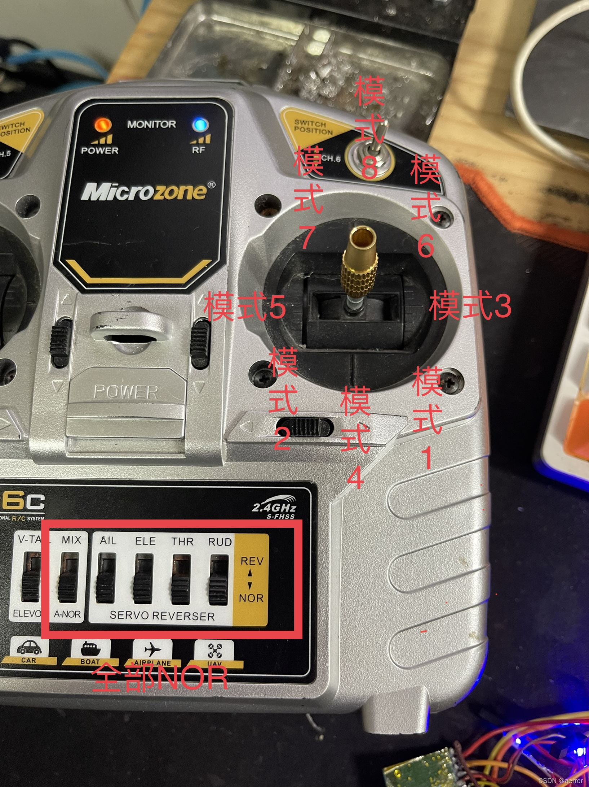
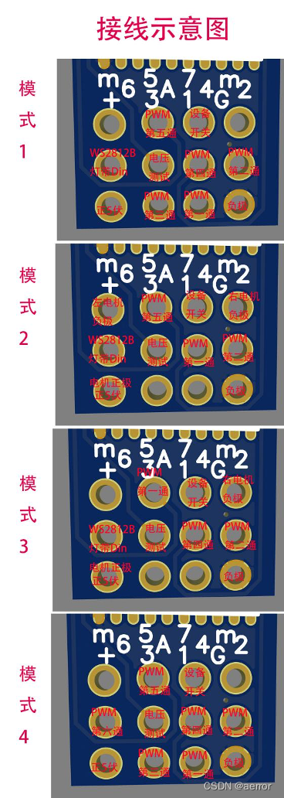
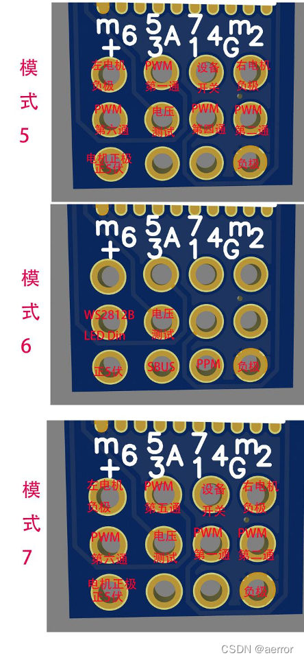

正面 反面
1. PWM输出通道多达6个， 可以自由切换7种模式，自由选择无刷，有刷，差速，炫酷的RGB全彩灯带等，自由玩耍。
2. 集成两个5A有刷电调，通过模式选择，可以双发，可差速，支持8250以下的空心杯有刷电机
3. 支持16通(MC6/7C 14通)sbus(第15通是RSSI),9通ppm（第9通是RSSI）,可以接飞控，飞fpv.
4. 支持Failsafe失控保护，只需要直接在摇控器的Failsafe失控保护菜单设置（FLYSKY ONLY)。
5. 集成RGB全彩 WS2812B灯带控制，可以通过摇控6个模式自由随时切换，流光溢彩，24位真彩彩虹，警灯模式.彩灯系统还可以在空中显示电池电量，左右舵方向指示，油门大小等。
6. 附带1个5A的设备开关，使用第7通道控制，可以作为大功率设备开关，如大功率探照灯，水泵，反推装置，刹车等。 也可以作为简易航灯闪灯控制，舵量小于1200是关闭，大于1800是全开，1200-1800是闪灯模式，舵量越大，闪得越快。
FLLYSKY:
一 首先遥控器开机进入对码模式，
二 接收机上电，
三 静待45秒，即可自动完成对码。
MC6C/MC7C:
一 关闭遥控器
二 接收机上电
三 静待30秒，直到接收机进入每0.1秒1亮1灭慢闪
四打开遥控器，接收块闪，然后常亮，对码完成
2.如何切换对码另一个摇控器？
FLLYSKY:
一. 关掉原来的摇控器，
二. 关掉接收机电源
三. 打开新的遥控器开机进入对码模式
四. 接收机上电，
五。 静待45秒，即可自动完成对码。
MC6C/MC7C:
一 关闭遥控器
二 接收机上电
三 静待30秒，直到接收机进入每0.1秒1亮1灭慢闪（三合一版本，要等到每秒1亮1灭）
四打开遥控器，接收块闪，然后常亮，对码完成
3.如何切换或设置接收机的工作模式？
方法一.
1. 摇控器开机，接收机开机，等待连接成功
2. 关掉接收机
3. 操作非油门摇杆(即左手油门，操作右边摇杆，反之操作左边摇杆), 杆摇拉尽到左下，中下，右下，左中，右中，左上，和右上其中一个位置。
4. 保持摇杆位置不动，重新打开接收机，等7秒， 指标灯进入闪烁模式，继续10秒，每3秒一个周期，一个周期闪多少下，就是对应的模式的数字。
5. 闪烁完成后，会长亮，这时就可以松开摇杆回中，模式切换完成
各个每个摇杆位置对应的模式如下：
FLYSKY:
左下， 模式1，6通PWM输出+RGB彩灯，默认模式。
中下， 模式2，两路有刷差速电调输出+4通PWM+RGB彩灯
右下， 模式3, 非差速有刷双电调输出+4通PWM+RGB彩灯
左中， 模式4，7通pwm输出，无彩灯
右中， 模式5，5通非差速有刷双电调输出，无彩灯
左上， 模式6，SBUS+PPM输出+RGB彩灯
右上， 模式7，5通有刷差速输出，无彩灯
中上， 模式8，5通无刷差速输出，无彩灯( 仅适用于，MC接收机)
MC6C:

方法二. (FLYSKY ONLY)
1. 进入设置菜单
2. 进入系统设置(System)
3. 进入接收机设置(Rx Setup)
4. 进入i-Bus setup
5. 选择通道(channel), 通道1-7对应 模式1-7
6. 长按cancel
4. 如何接线？
建议动手能力弱的使用转接板。标准1.25和2.54的2或3针插头，焊接简单，保证接收机的正负极和转接板对上，即可。发货时会拼好。要是散了，对照上面的标注接线。
自由模式接线较复杂，好处是轻。
每个模式接线都不一样的，每个模式请按照下图表格中的进行接线，多条的，请先拧成一根，再进行焊接。
或者先焊12根引出线，然后再手拧接线。
7种模式的接线见下面商品图


第8模式 无刷差速，接线时，电调接第1和第3通，第四通变为副翼，控制为3和4通混控。
5. WS2812B LEd灯条的如何接法？
A：要完整做这个彩灯系统，需要30颗ws2812B灯珠，建议买1米30颗的灯带。30个灯，设输入第一颗定义为1号灯，按顺序定义如下:
1-2 号灯： 两个红色示位灯，常亮，建议放在机翼最左边，机翼上下各放一颗，实践证明是必须的。
3-16 号灯: 14颗会流动的彩虹灯，放在机翼左右底部。
17-18 号灯: 两个绿色，常亮，建议放在机翼最左边，机翼上下各放一颗。
19 号灯： 黄色，机头示位灯，
20-29 号灯： 红或绿，指示电池电量，全绿表示满电，全红表示无电，电压显示范围为3.2-4.2伏，所以电压探针2s或以上应插电池平衡头的第二条黑线。
30 号灯： 白色尾灯，常闪， 建议安装在飞机的最尾部。
请为WS2812B灯使用独立供电模块，仅接一条共用的地线和Din数据线到本接收机的第6口。
6. 如何切换RGB灯带的模式？
A: 选择带RGB灯带控制的模式后使用第6通道进行控制。以下是舵量对应的模式。以0-1000表示。
0-50 - 关闭全部灯
50-150 - 显示飞机四个角的示位灯，即左红，右绿，前黄+闪烁的尾灯。
150-250 - 显示飞机四个角的示位灯，电量和油门灯
250-450 - 全部灯亮，警灯闪烁
450-650 - 全部灯亮，华尔兹拍子闪烁
650-1000 - 全部灯亮，流动的光，有电量，油门和左右方向指示。
每个段位的中间值为速度调整值，举个例子，如650-1000这个段位中，设置舵量为950比700会流动/闪得更快。
7. 如何搞一个简易的灯光系统？
A： 可以使用5A的开关通道实现，这个通道使用第7通道控制，舵量小于1200是关闭，大于1800是全开，1200-1800是闪灯模式，舵量越大，闪得越快。
8. 如何判断接收正当前的工作模式？
A： 对频完成后，关闭摇控机，接收指示灯进入闪烁模式， 每三秒闪几下表示模式几，如闪2下，表示模式2